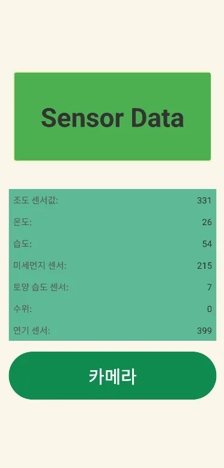

센서 값이 잘못 들어옴 (제 담당)
- 문제
- 회로에서 읽어 오는 센서 값이 실제와 맞지 않았습니다.
- 해결
- 센서 라이브러리 소스를 직접 고쳐 회로에서 읽는 값이 맞게 나오도록 했습니다.
마이크로프로세서 수업에서 3명이 만든 스마트 화분입니다. 아두이노 UNO가 센서 7종을 읽고, ESP32-CAM이 카메라 영상과 센서 값을 웹 페이지로 보여 줍니다. 우송대학교 반도체 경진대회에서 은상을 받았습니다.


값이 화면까지 가는 길
화분 상태를 센서로 읽고, 떨어진 곳에서도 카메라와 수치로 확인하는 것이 목표였습니다. 센서는 조도, 온습도(DHT22), 미세먼지, 토양 수분, 수위, 연기(MQ-2)이고, 급수 펌프와 서보 모터, 조명용 LED 12개를 달았습니다.
웹 화면의 버튼으로 펌프와 서보를 움직이는 연결은 마지막 버전에서 완성하지 못했고, 시리얼 명령으로만 제어했습니다.